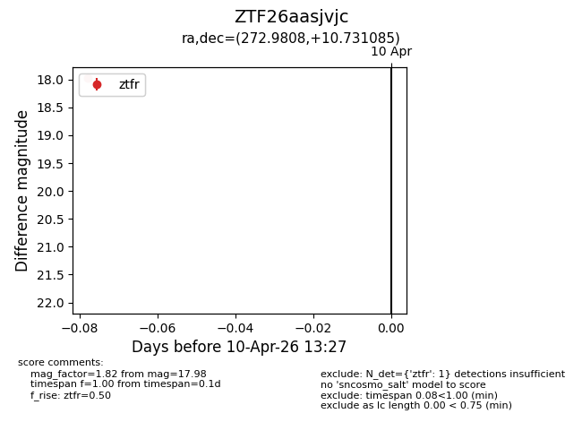
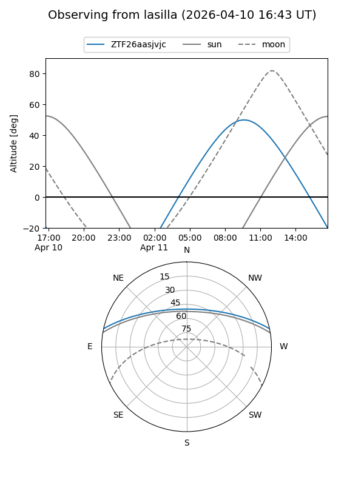
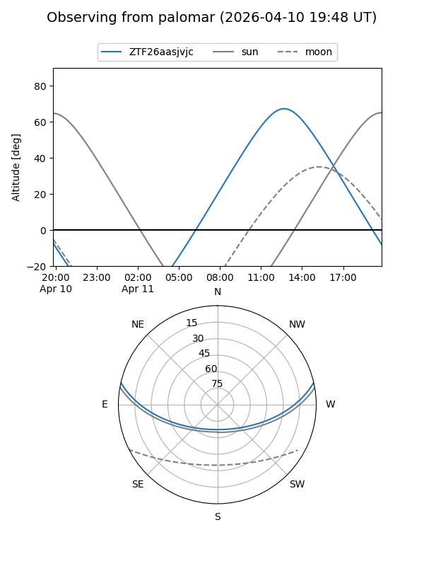

ZTF26aasjvjc
Target ZTF26aasjvjc at 2026-04-10 13:35
Aliases and brokers:
FINK: link
Lasair: link
ALeRCE: link
alt names
ZTF26aasjvjc (ztf,fink_ztf)
Coordinates:
equatorial (ra, dec) = 272.9808,+10.73108
equatorial (HMS+DMS) = 18:11:55.40,+10:43:51.91
galactic (l, b) = (38.1768,+13.58701)
Flags:
Photometry:
last ztfr=17.98
1 ztfr detections
Lightcurve

Visibility


Additional plots